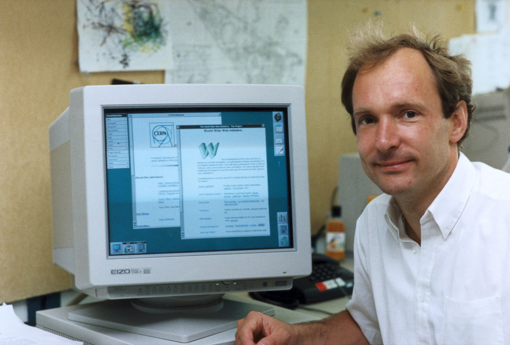

Ученные, изменившие компьютерный мир
Алан Мэтисон Тьюринг
Кто он: Алан Тьюринг — математик, криптоаналитик и логик. Его называют отцом теоретической информатики и искусственного интеллекта.
Что он сделал: во время Второй мировой войны он разработал множество методов взлома немецких шифров. Тьюринг построил электромеханическую машину, которая могла найти настройки машины Энигмы. Он формализовал концепции вычислений и алгоритмов с помощью машины Тьюринга, машины, которая может быть адаптирована для симуляции логики любых алгоритмов.
Основные достижения: он был удостоен премии Смита, офицера Ордена Британской империи и члена Королевского общества. С 1966 года «Ассоциация вычислительной техники» ежегодно присуждает премию Тьюринга за вклад в вычислительное сообщество.
Билл Гейтс
Кто он: Билл Гейтс — американский предприниматель, один из основателей компании Microsoft, неоднократно становился самым богатым человеком в мире по версии журнала «Forbes».
Что он сделал: В течение первых 5 лет работы в Microsoft Гейтс лично следил за каждой строкой кода, которую компания отправляла, часто исправляя те, которые он считал ошибочными или неправильными.
В первые дни он и Пол Аллен написали полный интерпретатор языка BASIC на ассемблере для компьютера, к которому у них даже не было доступа, и который имел только 4 Кбайт памяти.
Они написали это на PDP-10, работающем на эмуляторе Intel 8080.
Основные достижения: он был награжден «Национальной медалью» за технологии и инновации, заслуженным членом «Британского компьютерного общества» и премией Бауэра за лидерство в бизнесе.
Деннис Ритчи
Кто он: Деннис Ритчи был революционным ученым-компьютерщиком, который сыграл ключевую роль в разработке языка программирования «С» и операционной системы Unix.
Он работал в Lucent Technologies & Bell Labs и защитил кандидатскую диссертацию на тему «Структура программы и вычислительная сложность».
Тем не менее он никогда официально не получил докторскую степень.
Что он сделал: Он разработал язык программирования «C», на котором основаны многие используемые в настоящее время машинный язык и технологии, включая ваш PS4 / Xbox.
Ричи создал многопользовательскую операционную систему под названием Unix. Он также известен разработкой ALTRAN, B, BCPL и Multics.
Основные достижения: Ричи был удостоен премии Тьюринга, медали Хэмминга от IEEE, премии компьютерных пионеров, стипендиата «Музея истории компьютеров» и премии Гарольда Пендера.
Тим Бернерс-Ли

Кто он: Тим Бернерс-Ли — ученый-компьютерщик, наиболее известный как изобретатель Всемирной паутины.
Он является директором W3C, Инициативы Web Science Research, а также старшим научным сотрудником и заведующим кафедрой основателей (MIT).
Что он сделал: в 1989 году Тим сделал предложение по системе управления информацией, и он успешно реализовал связь между HTTP-клиентом и сервером через Интернет.
Он также является ключевой фигурой в data.gov.uk, правительственном проекте Великобритании по открытию всех данных, полученных для официальной работы, для свободного повторного использования.
Основные достижения: Тим был посвящен в рыцари королевой Елизаветой II за выдающуюся работу, удостоен награды Software System Award, Гордости Британии и Молодого новатора года (1995).
Тед Нельсон

Кто он: Тед Нельсон — американский социолог, философ, известный как один из пионеров информационных технологий и основатель концепции гепертекста.
Что он сделал: Тед ввел термины «гипертекст» и «гипермедиа» в 1963 году и опубликовал их в 1965 году. Ему также приписывают первое использование слов «трансклюзия», «виртуальность», «интертвингулярность» и «теледильдоника», создатель гипертекстовой системы Xanadu.
Основные достижения:В 1998 году на Международной конференции по всемирной паутине, Нельсону была присуждена Мемориальная премия Юрия Рубинского за его вклад в информационные технологии и инфраструктуру.
В 2001 году он был посвящен в рыцари французским правительством, став официальным членом французской организации «Officier des Arts et Lettres».